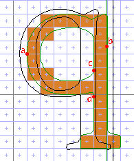
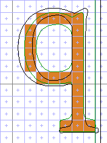
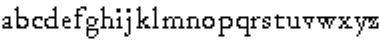
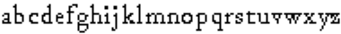

Deltas
A delta is an instruction that operates only at a specific resolution. There are two kinds of delta, invoked by two Xgridfit elements: a <delta> element moves points, and a <control-value-delta> element edits the Control Value Table.
Use delta instructions when the non-resolution-specific parts of your programming have failed for some reason. Here are some situations in which deltas typically make sense:
- Rounding of a distance has produced an unattractive result. (If the distance was from the Control Value Table, consider using <control-value-delta>.)
- A feature does not render well at particular sizes, and you wish to remove or modify it. (But programming can also be made to operate at a range of sizes using an <if> construction.)
- Components of a composite glyph are poorly positioned relative to each other.
In addition, you may wish to use a delta to smooth a curve that has developed a kink, or to turn a pixel on or off. Before you use a delta, however, you should make sure that the problem you are correcting is not the result of your own careless programming: failure to use control values correctly, for example, or failure to think through the problems presented by a complex feature. It may well be less trouble to write a great many deltas than to think intensively about the intersection of two diagonals. But once you have written non-size-specific code that addresses a problem, it can easily be adapted to handle similar problems in the same or another font. The same can rarely be said of deltas. So think of the delta as a last resort or a finishing touch.
Another situation that may tempt you to use deltas arises when the original glyph outline contains small irregularities that show up only at certain low resolutions. When an o is not quite symmetrical, for example, it may appear lopsided at times. In this case you should consider whether the glyph's lack of symmetry is a feature you wish to preserve or an error you should correct. The best time to consider such issues as this is before you start writing the glyph program.
If you have used a graphical hinter like the one in FontLab, it may have left you in some confusion about where deltas can and should come in the sequence of a glyph program. Deltas may come anywhere, but they should generally be placed so as to correct any problems in the positioning of a point as early as possible. The letter q in the left-hand figure below illustrates. (The black lines show the original shape of the glyph and the green lines the grid-fitted shape; the brown squares show which pixels are on. The black vertical line shows the original right margin, and the green vertical line shows the grid-fitted one.)
|  |  |
The q on the left is too wide, and it bumps into the right margin. The problem arises after the left-hand curve has been hinted; then the overall width of the glyph is regulated by positioning point b relative to point a:
<move distance="bdpq-width">
<reference>
<point num="a"/>
</reference>
<point num="b"/>
</move>
The problem is that the distance "bdpq-width" gets rounded up at 15 ppem when it would be better visually for it to be rounded down. If you waited till the end of the glyph program to address this problem, you would need deltas to correct the position not only of b, but also of c, d, and several other points not shown here--for example, those that control the horizonal positions of the serif ends. All of these points are positioned relative to point b, so if you correct the position of b immediately after the execution of the instruction above, thus:
<delta>
<delta-set size="6" distance="-8">
<point num="b"/>
</delta-set>
</delta>
then the position of the others will automatically incorporate the correction, and the result will be the much better glyph on the right.
We can correct the problem even earlier than this, however. Notice that the <control-value> that controls the width of the q is named "bdpq-width": this is because that single entry controls the width of b, d and p as well as q. As the following figure demonstrates, the width of all four characters is wrong at 15 ppem:
|  |
We can correct this problem most efficiently with a <control-value-delta> instruction in the <pre-program>. First we round the distance, then execute the delta instruction:
<round value="bdpq-width"/>
<control-value-delta>
<delta-set cv="bdpq-width" size="6" distance="-8"/>
</control-value-delta>
And now, as the figure below shows, the width of all four characters has been corrected without resorting to the use of delta instructions in the glyph programs themselves.
|  |
Elements Relating to Deltas
In addition to the following elements, you should know about the delta-base and delta-shift graphics variables, which you may both read and write to.
<delta>
A delta instruction moves points at particular sizes. The <delta> element may contain any number of <delta-set> elements. When all of the <delta-set> elements in a <delta> move the same point, it may be convenient to make the first element a <point>. This is the default <point>, which every <delta-set> will move unless it contains its own <point>.
The direction of the move is determined by the current setting of the freedom vector. The available specifications are fuzzy as to the details. You will experience no surprises when the vectors are set to x or y; you may experiment with the vectors set at other angles.
<control-value-delta>
The <control-value-delta> element works like the <delta> element, but operates on the Control Value Table rather than on a point. Each <delta-set> inside a control-value-delta element must have cv, size and distance attributes, but it may not contain a point.
The setting of the vectors has no effect on the <control-value-delta>. Rather, the <delta-set> specifies an amount to add to or subtract from the value stored there.
<delta-set>
The <delta-set> element encapsulates the essential information about a single delta move or adjustment: the resolution at which to apply the delta, the magnitude of the adjustment, and the point or control value that will be affected.
The resolution is determined by the size attribute, which can be a number from 0 to 47. It is added to the value set by the <set-delta-base> or <with-delta-base> instruction to obtain the resolution (in pixels per em) at which the move should take place. The default delta base is 9; if you don't change it, a size of "0" means 9 ppem, "9" means 18 ppem, and so forth up to "47," which means 56 ppem.
The distance attribute is the distance to shift the point along the freedom vector, or the amount to add to or subtract from the control value. Legal values are from -8 to 8 (excluding 0). When moving points, negative numbers shift against the direction of the freedom vector (generally down or left) and positive numbers shift in the direction of the freedom vector.
The default unit by which pixels are moved and control values adjusted is 1/8 pixel. The unit is controlled by means of the <set-delta-shift> or the <with-delta-shift> instruction.
A <delta-set> that is the child of a <delta> will normally contain a single <point>. However, the <point> may be omitted in either of two circumstances: First, when the <delta> is the child of a <move> element, the <point>, when not specified, is implicitly the <point> that is the child of the parent <move>. Second, when the first child element of the <delta> is <point>, that point will be moved by any <delta-set> that lacks a child <point>. These two deltas are equivalent:
<delta>
<delta-set size="3" distance="4">
<point num="p"/>
</delta-set>
<delta-set size="8" distance="-7">
<point num="p"/>
</delta-set>
</delta>
<delta>
<point num="p"/>
<delta-set size="3" distance="4"/>
<delta-set size="8" distance="-7"/>
</delta>
All attribute values in a <delta-set> and a child <point> must be capable of being resolved to numerical values at compile time. Variables and function parameters are not permitted.
<set-delta-base>
<with-delta-base>
Sets the number that is added to the "size" attribute of a <delta-set> element to get the resolutioni at which an adjustment should take place. The default value is 9, and that rarely needs to be changed.
<set-delta-shift>
<with-delta-shift>
The unit by which a delta instruction shifts a point. If the unit is "2," the smallest shift is half a pixel; if "4," it is a quarter of a pixel; if "8" (the default) it is one eighth, and so on.